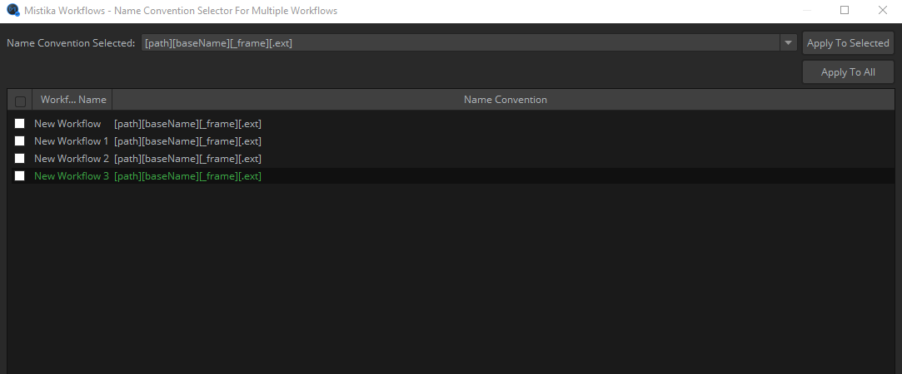
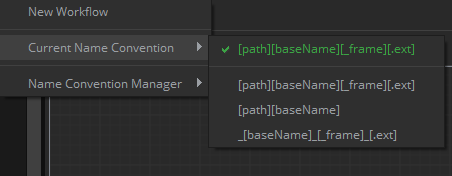
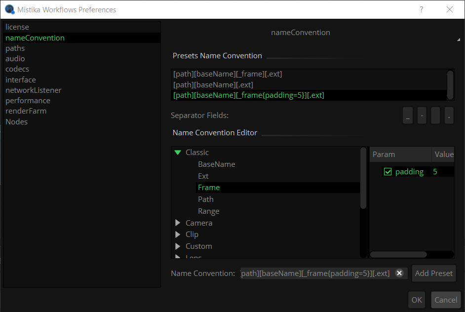

Mistika Workflows provides an auto-naming mechanism to ensure file naming coherence and automatic naming. This system also permits to extract metadata fields from the input files (either from embedded metadata or from the paths and file names) and to define the rules to create the new file names for the output files automatically.
In the case of the name convention it works as follows:
By default all nodes will use the default name convention of their workflow (which is visible at the bottom right corner of the Nodegraph and can be changed with its contextual menu). The name convention by default is:
[path][baseName][.ext]
In addition, nodes capable to transform between name conventions (not all nodes have this capability) have a Name Convention property. By default (when left empty) they will use the name convention coming from their input connectors, or if there are no connected inputs they will fallback to the default name convention of the workflow.
Depending on the node type:
For the case of output and task nodes the Name Convention property will establish the path syntax that is passed to the output connectors to inform the next nodes. By default, all nodes get the name convention from the nodes connected to their inputs (or the default name convention if no input is connected), but If the Name Convention property is specified then the node will transform the name convention to the new syntax and then pass it to the output connectors.
For generic input nodes (Watcher, FTP, Folder, Media Sequence ...), the Name Convention property will be passed to output connectors as in the previous case, but in this case it may also be used to interpret the path syntax of the files imported by the node.
When input nodes are importing enumerated sequences you will need to pay attention to the frame index tag (and its separator character, if any) and make sure it is correct, as there is no industry standard for this.
For specialized input nodes from camera manufacturers (ARRI, Canon, Panasonic, RED, Sony ...) the name convention is automatically parsed according to the manufacturer specifications, which has priority over the default name convention.
By default the name convention is the same for all workflows. But you can establish a different name convention at per workflow level or even at per node level as we said (for the case of nodes having a Name Convention property).
This naming system can certainly require some practice but it is very powerful, as we will see in next sections it can do things like creating new names based on metadata tokens extracted from media files (or other types of files), or from the source file paths, or from user custom metadata added to certain properties. And it can also be used to ensure that no input file is imported into the workflow if it does not respect the pre-selected naming rules, as otherwise human mistakes could easily propagate to delivery files.
Please note that in many cases the input files do not even exist at node creation time, so you should not expect nodes to be created with a matching name convention automatically. Many workflows will work with no action needed on your side, but in general you should check that you have selected the correct name convention in advance.
A first example: Removing unwanted characters.
By definition, the [baseName] token always starts at the first character of the file name, but sometimes it is not clear where it needs to end, and there can be "decorative" characters that you want to be removed.
As a first example, let's suppose that you have received a folder of enumerated files with potentially confusing names like these:
Test_#0300.exr
Test_#0301.exr
Test_#0302.exr
...
And now you import those files with a Folder node. Let's suppose you have selected this name convention, which is the most typical for enumerated sequences:
[path][baseName][_frame][.ext]
This will not work well in this particular case. If we look at the first file it will take "Test" as the baseName and "_#0300" as the [_frame], which will not provide a valid number. A simple solution is to simply set the NameConvention property of the Folder node to this:
NameConvention: [path][baseName]_#[frame][ext]
Which will get the proper values for the syntax tokens as we wanted, which will be passed downstream:
[baseName] = >Test
[frame] => 0300
In this example, the "#" character will be simply discarded when the Folder node is connected to posterior nodes, because it has been explicitly left out of the name convention tokens.
Now let's suppose that you connect the resulting Folder node to a ProRes node, and you set the File property (which defines the file name to be created for the ProRes movie) to the usual one:
[path][baseName][_frame][.ext]
It will create the ProRes file with the name that we expect ( Test.mov ) with no need to repeat the above modifications. This is because once the tokens are redefined they are passed to posterior nodes with their new values.
Metadata token injection in output paths and filenames ("File Path" property):
Many nodes can inject additional metadata tokens to the output paths and output file names by using their File Path property (or any other property accepting path syntax, such as Dst. Folder, Directory, Name, etc. ). These can be any metadata tokens extracted from media files (or even user defined by using the Edit Metadata node or other nodes capable for metadata injection).
To insert a metadata token at some point of the File Path property, type the "[" character and start typing the name of the metadata field. A combo list will appear to let you choose any token starting with the same characters that you are typing.
If you have typed a token field between "[" "]" and it is recognized then it will change to green color (always check that it becomes green, otherwise it is telling you that the token does not exist and it will not work). A good example of this process is shown at the end of this video
You can also tell Mistika Workflows to get the values of additional metadata tokens from specific sub-strings appearing in the file paths and file names of the input files. This is normally achieved by using the NC to metadata node (Name Convention to metadata). However, before you can do that all the metadata tokens that you want to use need to appear in this configuration file (before opening Mistika Workflows):
SGO AppData\shared\config\NameConventionPlaceHolders.xml
That file comes with the most common metadata tokens used in the media industry, as found embedded in standard media files and typical media production workflows, but you can add more tokens as said (just imitate the existing syntax that you will find within the xml file).
"File Path" and "Name Convention" properties difference:
For the case of nodes creating new files, note that their Name Convention property and the File Path property serve different purposes and their syntax does not need to be identical at all. In most cases you will not need to touch them, but sometimes you may want to make changes or to specify different metadata granularity. Now consider this other example:
Let's suppose a previous node imported a file named "MyFile.mxf", and it found some tokens embedded in the metadata of the media file (for example location: "London", scene: "Scene006" and take: "Take004"). and now we connect it to a ProRes task node and we set these properties on it:
File Path: [path][location][_scene][_take][.ext]
Name Convention: [path][baseName][.ext]
Then, the ProRes node will transcode "MyFile.mxf" to a ProRes file renamed with those metadata tokens. In our example the new ProRes file will be named like:
London_Scene006_Take004.mov
Meanwhile, the Name Convention property can (and should) be left as [path][baseName][.ext]. Because when changing the File Path property of a node that is creating new files it will remap the output syntax accordingly, so in the above example the next node will receive this new baseName:
London_Scene006_Take004
And thanks to this capability you do not need to repeat the token injection process in posterior nodes, which could complicate things unnecessarily: Alternatively we could use the File Path syntax in the above example ( [path][location][_scene][_take][.ext] ) also for the Name Convention property and it will also work, but if we do so then the next node will need to be aware about what are those new tokens and what to do with them on its path related properties , which depending on the case can be an annoying requirement easily avoidable as explained.
Inserting parent folder names from the original path into the destination path:
There is an interesting token that permits to get a certain number of parent folders from the original path and reuse them when creating the destination path:
[fullParentFolder{levels=value}]
(Note that you don't need to remember the syntax, as we will see in the next point about the Name convention manager)
Example: Let's suppose we feed this .mxf file to a ProRes node: /Volumes/disk1/Location4/Scene007/MyMediaFile.mxf
And we set the File Path property of the ProRes node to: /Volumes/disk4/[fullParentFolder{levels=2}][baseName][.ext]
Then the ProRes node will create this file: /Volumes/disk4/Location4/Scene007/MyMediaFile.mov
Creating new metadata tokens:
All tokens that you plan to use must exist in this file before opening Mistika workflows:
SGO AppData/shared/config/NameConventionPlaceHolders.xml
You can add tokens iin any category you prefer, but first you should search for your token, as most of the metadata used in media production is already there.
To create a token named "ClientChange", you could add something like this:
<placeHolder from="metaData" name="ClientChange">
<visibility>true</visibility>
</placeHolder>
From that point you can use it as any other token mentioned in this manual. For example you can give it values with metadata management nodes like NC to metadata , or your own Python nodes (you can use the code of NC to metadata" as a reference about how to do it, as it is also a python node...)
Name convention manager:
Accessible trough these methods:
Main menu -> File->Preferences->Name Convention
Nodegraph ->Name Convention indicator (contextual menu)->Open Name Conventions manager
In the Properties Panel of nodes having a Name Convention property, by using the "..." icon of that property.
In this panel you will find a path syntax editor which will allow you to define folder paths, file naming and frame numbering syntax.
This panel provides a lot of extra metadata tags that you can inject to your output filenames, but the most common are the ones from the Classic category
Note that most other metadata tags ([Iso], [Location], etc) will need to be extracted from media files at execution time and are not available to the input nodes, which in general can only use metadata tags from the Classic category in their naming conventions. You can later inject the rest of metadata tags to the output files as needed.
This tool is also useful to avoid having to remember the specific syntax of each token. The supported tokens are organized in categories, and a double click in one of them will insert the necessary syntax in the Name Convention entry. (alternatively, if you are editing a file path property of a node you can start typing the character "[" followed by the starting of a token name, and a combo box will open to select between matching tokens).
Note that many tokens accept additional parameters (such as the levels parameter of the fullParentFolder token mentioned above). The parameters are shown in the right column, and their values are editable in value column.

In the Presets Name Convention selector you will find the name conventions list, which permits to select which one to use for the current workflow (or to delete them when not used anymore). You can also create new presets in the Name Convention field and then click Add Preset to save them to the list, which will also make them available to all your future projects.
The syntax is case sensitive, and it will refuse syntax errors by removing the brackets automatically. For example the [baseName] tag requires the uppercase "N". If you just type a mistake like:
[path][basename][ext] (wrong!)
then you will notice that the brackets disappear, you will see something like:
[path]basename[ext]
Rather than the correct expression:
[path][baseName][ext]
For example, if you don't fix it and you have and input file named MyFile_0223.dpx connected to an exr node you would expect an output file named as MyFile_0223.exr but the above example will produce something like "basename_2449.dpx. So you can easily find where the problem comes from.
When using task nodes for transcoding, the [.ext] extension field will automatically generate the file extension corresponding to the image format created by the node ( .dpx, .exr, etc).
Example: If we want to use an input node to import files in this style:
/Volumes/disk1/MyMediaFile.0038.dpx
Then we will need to use a name convention different than the default one, as the default syntax uses a "_" character as a prefix for the frame number ( Default = [path][baseName][_frame][.ext] ). So we will need to use this other one:
[path][baseName][.frame][.ext]
or if we have files like:
/Volumes/disk1/MyMediaFile0038.dpx
Then we need to use:
[path][baseName][frame][.ext]
In more detail, the task nodes will translate syntax fields of input files as follows. Let's say we connect the input node to a dpx task node, and we do not set any output folder:
file: /Volumes/disk1/MyMediaFile.0038.dpx
Name convention: [path][baseName][.frame][.ext]
[path] = /Volumes/disk1/ (the input folder will be translated to the destination folder of the output node)
[baseName] = MyMediaFile (it will pass unchanged)
[.frame] = .0038 (unchanged, except for nodes capable to limit frame ranges. The frame number prefix character is the same for input and output files)
[.ext] = .dpx (translated to the extension of the new format)
And let's say that now we connect the output of the dpx node to a Jpeg task node, with its destination folder property set to /Volumes/disk2. Then we will obtain new files in the style:
/Volumes/disk2/MyMediaFile.0038.jpg
Name convention selector:

Each Workflow can have its own name convention scheme to be used by default, which is visible in this tool. It is available trough the Workflows->Name convention manager->Edit name conventions for all workflows, also available as a contextual menu in the Nodegraph. Here you can apply a naming scheme to the selected workflows (Apply to Selected), or press Apply to All to set a same naming scheme for all the workflows).
Current Name Convention:

This menu is available trough the main menu trough Workflows->Current name convention and also as a contextual menu in the Nodegraph. And it permits to select the current naming scheme for the input and output files in the current workflow.
The current name convention is also shown in the bottom right corner of the Nodegraph.
Note that this is just the name convention to be used by default, it will not be used for nodes that define its own Name Convention property explicitly.
File numbering and tag parameters
Enumerated sequences require the frame tag in their name convention, otherwise they will be interpreted as unrelated files (which sometimes is what you want..). If they have a separator prefix it also needs to be included in the metadata tag (use descriptors like [frame], [_frame], [.frame], [-frame]...), so that the frame number can be found correctly and that the whole sub string can be added or removed across the workflow depending on trans-coding needs.
You can also add the padding (lead zeroes) as a tag parameter, with the syntax [tag{parameter_name=value}]. If a metadata tag has available parameters they will be shown when clicking on it. In this example:

Example results for a dpx file with baseName "MyFile", when writing frame 234:
[basename][_frame{padding=5}] -> MyFile_00234.dpx
[basename][frame{padding=7}] -> MyFile0000234.dpx
[basename][.frame{padding=0}] -> MyFile.234.dpx
Maintain Padding
A property Name Convention -> Maintain Padding has been added to some input nodes for situations when the lead zeros may not be known in advance, such as Watcher and Folder nodes, which basically permits to "Maintain the Input Padding (on/off)". In any case, if the specifications of your workflow are known it is always recommended to use strict name conventions and strict frame numbering rules (padding digits explicitly defined), as otherwise human misspellings on input files could pass undetected to final deliveries.